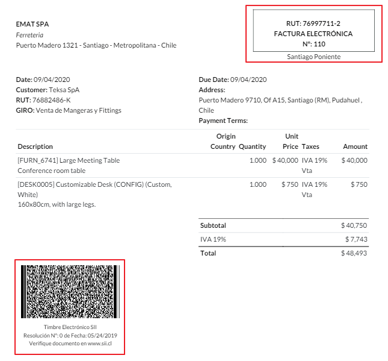
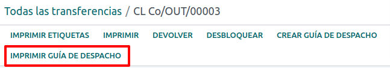

Chile¶
Truco
Vea las dos grabaciones webinar a continuación, que son una presentación general de la localización y busque la lista de videos para ver flujos de trabajo prácticos usando Odoo en Chile.
Módulos¶
Instale los siguientes módulos para que pueda utilizar todas las funciones de la localización chilena.
Nombre |
Nombre técnico |
Descripción |
|---|---|---|
Chile - Contabilidad |
|
Agrega las funciones mínimas de contabilidad que requiere una empresa para operar en Chile según las normas y regulaciones del Servicio de Impuestos Internos. |
Chile - Reportes contables |
|
Agrega los reportes Propuesta F29 y Balance Tributario (8 columnas). |
Chile - Factura electrónica |
|
Incluye todos los requisitos técnicos y funcionales para generar y recibir facturas electrónicas en línea según las normas del Servicio de Impuestos Internos. |
Chile - Recibos electrónicos |
|
Incluye todos los requisitos técnicos y funcionales para generar y recibir facturas electrónicas digitalmente según las normas de Servicios de Impuestos Internos. |
Exportación electrónica para Chile |
|
Incluye todos los requisitos técnicos y funcionales para generar facturas electrónicas para la exportación de bienes según el Servicio de Impuestos Internos y las normas aduaneras. |
Chile - Guía de envío facturación electrónica |
|
Incluye todos los requerimientos técnicos y funcionales para generar guías de envío a través del servicio web según las normas del Servicio de Impuestos Internos. |
Nota
Odoo instala automáticamente el paquete adecuado para la empresa de acuerdo al país seleccionado cuando se creó la base de datos.
El módulo Chile - Guía de envío facturación electrónica depende de la aplicación Inventario.
Importante
Todas las funciones están solamente disponibles si la empresa ya completó el proceso de certificación del SII Sistema de Facturación de Mercado.
Información de la empresa¶
Vaya a y asegúrese de que la siguiente información de la empresa esté actualizada y correctamente escrita:
Nombre de la empresa
Dirección:
Calle
Ciudad
Estado
Código postal
País
NIF: escriba el número de identificación fiscal para el Tipo de contribuyente.
Nombres de las actividades: seleccione hasta cuatro códigos de actividad.
Descripción de la actividad de la empresa: escriba una corta descripción acerca de la actividad de la empresa.
Ajustes de contabilidad¶
Luego, vaya a y siga las instrucciones de configuración:
Información fiscal¶
Configure los siguientes datos del Contribuyente:
Tipo de contribuyente seleccionando el tipo que corresponda:
IVA afectado (1° categoría): para las facturas que cobran impuestos a sus clientes
Emisor de boletas (2° categoría): para los proveedores que emiten boletas
Cliente final: solo emite recibos
Extranjero
Oficina SII: seleccione la oficina regional SII de su empresa
Datos de facturación electrónica¶
Seleccione su ambiente de Servicios web SII:
SII - Prueba: para bases de datos de prueba que utilizan los CAF del Servicio de Impuesto Internos. En este caso, puede probar los flujos de conexión directa, enviando los archivos al SII.
SII - Producción: para las bases de datos de producción.
SII - Modo demostración: los archivos se crean y se aceptan automáticamente en el modo demostración pero no se envían al SII. Por este motivo, no aparecerán errores de rechazo o Aceptado con objeciones. Cada validación interna debe probarse primero en el modo demostración. No le recomendamos que seleccione esta opción en una base de datos de producción.
Luego, ingrese los Datos de facturación electrónica legal:
SII Resolución N°
SII Fecha de resolución

Servidor de correo entrante para DTE¶
Puede definir una Bandeja de entrada de correo de facturación electrónica de los DTE para recibir los correos de declaración y validación de sus clientes. Activar está función en es necesario si desea usar la Bandeja de entrada de correo de facturación electrónica como el servidor de correo entrante de los DTE.
Importante
Para recibir sus documentos del SII, es necesario que configure su propio servidor de correo. Puede encontrar más información acerca de como hacerlo en está página: Enviar y recibir correos electrónicos en Odoo con un servidor de correo electrónico
Comience haciendo clic en Configurar correo entrante para los DTE, luego haga clic en Nuevo para agregar un servidor y completar los siguientes campos:
Nombre: proporciónele un nombre al servidor.
Tipo de servidor: seleccione el tipo de servidor que usó.
Servidor IMAP
Servidor POP
Servidor local: usa un script local para recuperar los correos y crear nuevos registros. Puede encontrar el script en la sección de Configuración si selecciona esta opción.
Autenticación Gmail OAuth: requiere que configure sus credenciales API de Gmail en los ajustes generales. Puede encontrar un enlace directo para las configuración en la sección Información de inicio de sesión.
Servidor DTE: active esta opción y al hacerlo, esta cuenta de correo se usará para recibir las facturas electrónicas de los proveedores y toda la comunicación de parte de SII que tenga que ver con las facturas electrónicas emitidas. En este caso, este correo debe coincidir con los dos correros declarados en el sitio del SII en la sección: ACTUALIZACIÓN DE DATOS DEL CONTRIBUYENTE, Correo de contacto SII y Correo de contacto de empresas.
En la pesataña Servidor e inicio de sesión (para los servidores IMAP and POP):
Nombre del servidor: escriba el nombre del alojamiento o el servidor IP.
Puerto: escriba el puerto del servidor.
SSL/TLS: active está opción si las conexiones están encriptadas usando el protocolo SSL/TLS.
Nombre de usuario: escriba el nombre de usuario de inicio de sesión del servidor.
Contraseña: escriba la contraseñ para inicio de sesión.

Truco
Antes de usarlo, le recomendamos que archive o elimine de su bandeja de entrada todos los correos relacionados con las facturas de proveedor que no requieren procesamiento en Odoo.
Certificado¶
Requiere un certificado digital en formato .pfx para generar la firma de la factura electrónica. Para agregar una, haga clic en Configurar certificados de la firma en la sección Certificados de firma. Luego, haga clic en Nuevo para configurar el certificado:
Clave del certificado: haga clic en Subir archivo y seleccione el archivo
.pfx.Llave maestra del certificado: escriba la llave maestra del archivo.
Número de serie: dependiendo del formato del certificado, puede que el campo no se complete automáticamente. En ese caso, escribe el RUT del representante legal del certificado.
Propietario del certificado: seleccione uno si necesita restringir el certificado para un usuario en específico. Para compartirlo con todos los usuarios que facturan, deje el campo vacío.

Multidivisa¶
La divisa oficial la proporciona el sitio chileno mindicador.cl. Vaya a para establecer un Intervalo para cuando la tasa de cambio se actualice automáticamente o seleccionar otro Servicio.
Información del contacto¶
También es necesario que configure los contactos para enviarle al SII las facturas electrónicas. Para hacerlo, abra la aplicación y complete los siguientes campos en un formulario de contacto nuevo o ya existente.
Nombre
Correo electrónico
Número de identificación
Tipo de contribuyente
Descripción de la actividad
En la pestaña Facturación electrónica:
Correo electrónico de los DTE: escriba la dirección de correo del remitente para el contacto.
Precio de la guía de envío: si lo tiene, seleccione cuál precio se mostrará para la guía de envío.
Nota
El Correo de los DTE es aquel que usará para enviar los documentos electrónicos y debe configurarse en el contacto que será parte de un documento electrónico.

Tipos de documentos¶
Los documentos contables están categorizados de acuerdo con los tipos de documentos que define el SII.
Los tipos de documentos se crean automáticamente después de la instalación del modulo de localización y se pueden gestionar en .

Nota
Varios tipos de documentos estarán desactivados de manera predeterminada, pero los puede activar deslizando la opción Activar.
Uso en facturas¶
El tipo de documento en cada transacción se define por:
El diario relacionado a la factura, identifica si el diario usa documentos.
La condición aplicada según el tipo de emisor y destinatario (por ejemplo, el vendedor o el régimen fiscal del proveedor).
Diarios contables¶
Generalmente los diarios contables en Odoo representan una unidad de negocio o ubicación.
Example
Ventas Santiago.
Ventas Valparaíso.
Para la tiendas al por menor, es común tener un diario por PdV.
Example
Caja 1.
Caja 2.
Las transacciones de compra se pueden manejar con un solo diario, pero a veces las empresas usan más de uno para administrar algunas transacciones contables que no están relacionadas con las facturas de proveedor. Puede configurar esto fácilmente usando el siguiente modelo.
Example
Pago de impuestos al gobierno.
Pagos de empleados.
Crear un diario de ventas¶
Para crear un diario de ventas, vaya a . Luego, haga clic en el botón de Nuevo y complete la siguiente información:
Tipo: seleccione Venta desde el menú desplegable para los diarios de facturas de los clientes.
Tipo de punto de venta: seleccione la opción En línea si usará el diario de ventas para los documentos electrónicos. De lo contrario, si el diario se usa para facturas importadas de otro sistema o si está usando el portal Facturación MiPyme del SII, puede usar la opción Manual.
Usar documentos: seleccione esta casilla si el diario usará tipos de documentos. Este diario solo aplica para los diarios de compra y ventas que pueden estar relacionado a diferentes colecciones de tipos de documentos disponibles en Chile. De manera predeterminada, todos los diarios de ventas creados usarán documentos.
Luego, desde la pestaña Asientos de diario, defina una Cuenta predeterminada de ingresos y una Secuencia de nota de crédito dedicada en la sección de Información contable. Configurar estos campos es necesario para uno de los casos de uso de las notas de débito.
CAF¶
Necesita un código de asignación de folios (CAF) para cada tipo de documento que emita de forma electrónica. El CAF es un archivo que emite el SII al emisor con el folio o secuencia autorizados para documentos de facturación electrónica.
Su empresa puede solicitar varios folios para obtener varios CAFs vinculados a diferentes rangos de folio. Estos CAFs se comparten en todos los diarios, por lo que solo necesita activar uno por tipo de documento.
Consulte la documentación del SII para obtener más información sobre cómo conseguir los archivos CAF.
Importante
El CAF requerido por el SII son diferentes en la etapa de producción y en la de pruebas (modo de certificación). Asegúrese de tener el CAF correcto en su entorno.
Subir archivos CAF¶
Una vez que los archivos CAF se han adquirido a través del portal SII, los debe subir a la base de datos en . Después, haga clic en Nuevo para empezar a configurar. Una vez en el formulario, suba su archivo CAF y después haga clic en guardar.
Una vez que se haya subido, el estado cambiará a en uso. En este momento, cuando la transacción se utilice para este tipo de documento, el número de factura tomará el primer folio en la secuencia.
Importante
Debe activar los tipos de documento antes de cargar los archivos CAF. En caso de que se hayan utilizado algunos folios en el sistema anterior, debe establecer el siguiente folio válido cuando se cree la primera transacción.
Plan de cuentas¶
El plan de cuentas se instala de forma predeterminada como parte del conjunto de datos incluidos en el módulo de localización. Las cuentas se mapean automáticamente en:
Impuestos
Cuentas por pagar predeterminadas.
Cuentas por cobrar predeterminadas
Cuenta de transferencias
Tipo de cambio
Ver también
Impuestos¶
Como parte del módulo de localización se crean los impuestos de forma automática con su cuenta financiera y configuración. Puede gestionar estos impuestos desde .
Chile tiene varios tipos de impuestos, los más comunes son:
IVA: el IVA normal que puede tener varias tasas.
ILA: el impuesto a las bebidas alcohólicas.
Ver también
Uso y prueba¶
Flujo de trabajo de la factura electrónica¶
En la localización chilena, el flujo de trabajo de la factura electrónica incluye la emisión de la factura del cliente y la recepción de la factura del proveedor. El siguiente diagrama explica cómo se comparte la información con el SII, los clientes y los proveedores.

Emisión de factura para el cliente¶
Una vez que haya creado y configurado los contactos y diarios, las facturas se crearán de manera estándar. Para Chile, una de las diferencias es el tipo de documento que se selecciona automáticamente en función del contribuyente. Si desea cambiar de forma manual el tipo de documento en la factura, vaya a .

Importante
Documentos tipo 33: debe haber al menos un producto con impuesto en las facturas electrónicas, de lo contrario el SII rechazará la validación del documento.
Validación y estado del DTE¶
Cuando complete toda la información de la factura, ya sea de forma manual o automática cuando se crea desde una orden de venta, proceda a validar la factura. Después del registro de la factura:
El archivo DTE se crea de forma automática y se registra en el chatter.
El estado de los DTE y SII se estableció como pendiente a enviar.

Odoo actualiza automáticamente el estado DTE con una acción programada que se ejecuta todos los días por la noche. Si necesita obtener la respuesta del SII de inmediato, puede hacerlo de forma manual siguiendo el flujo de trabajo del estado DTE:

El primer paso es enviar los DTE al SII. Los puede enviar de forma manual haciendo clic en el botón enviar ahora. Esto generará un número de rastreo del SII para la factura, que se utiliza para comprobar los detalles enviados por el SII por correo electrónico. El estado de la DTE se actualizará a solicitar estado.
Una vez que se recibe la respuesta del SII, Odoo actualiza el estado DTE. Para hacerlo de forma manual haga clic en el botón Verificar en SII. El resultado puede ser aceptado, aceptado con objeción o rechazado.

Importante
Existen estados intermedios en el SII antes de la aceptación o rechazo. Se recomienda NO hacer clic continuamente en Verificar en SII para un trámite sin problemas.

La respuesta final del SII puede tener uno de estos valores:
Aceptado: indica que la información de la factura es correcta. El documento ahora es válido fiscalmente y se envía al cliente de forma automática.
Aceptado con objeción: indica que la información de la factura es correcta pero se identificó un problema menor, sin embargo, nuestro documento ahora es fiscalmente válido y se envía automáticamente al cliente.
Rechazado: indica que la información en la factura no es correcta y se debe corregir. Recibirá los detalles del error en los correos electrónicos que registró en el SII. Si está configurado de forma correcta en Odoo, los detalles también aparecerán en el chatter una vez que se procese el servidor de correo electrónico.
En caso de que su factura sea rechazada, siga estos pasos:
Cambie el documento a borrador.
Realice las correcciones necesarias en función del mensaje recibido del SII en el chatter.
Registre la factura otra vez.

Referencias cruzadas¶
Cuando la factura se crea como resultado de otro documento fiscal, la información relacionada con el documento de origen debe registrarse en la pestaña referencias cruzadas, la cual normalmente se utiliza para notas de crédito o débito, sin embargo también se puede usar en facturas. Odoo configura las notas de crédito o débito de forma automática.

Reporte la de factura en PDF¶
Se crea una vez que el SII haya aceptado y validado la factura, después de que se haya impreso el PDF. El reporte incluye los elementos fiscales que indican que el documento ya es válido.
Importante
Si su alojamiento se encuentra en Odoo.sh o local deberá instalar de forma manual la biblioteca pdf417gen. Para instalarla utilice el comando pip install pdf417gen.
Validación comercial¶
Una vez que la factura se envió al cliente:
El estado del contacto DTE cambia a enviado.
El cliente debe enviar un correo electrónico donde confirme su recepción.
Posteriormente, si los términos y datos de la factura son correctos, se envía una confirmación de aceptación; en caso contrario, se envía una reclamación.
El campo estado de aceptación de DTE se actualiza de forma automática.

Proceso para facturas con reclamo¶
Una vez que el SII haya aceptado la factura no se puede cancelar en Odoo. Si recibe un reclamo de su cliente, la forma correcta de proceder es crear una nota de crédito para cancelar o corregir la factura. Consulte la sección Notas de crédito para obtener más información.

Errores comunes¶
El SII puede rechazar facturas por varios motivos, pero estos son algunos de los errores más comunes que podrían ocurrir y su solución correspondiente:
- Error:
RECHAZO- DTE Sin Comuna OrigenConsejo: asegúrese de que la dirección de la empresa sea correcta y esté completa, incluyendo el estado y la ciudad. - Error:
en Monto - IVA debe declararseConsejo: las líneas de la factura deben incluir IVA, asegúrese de agregar uno en cada línea de la factura. - Error:
Rut No Autorizado a FirmarConsejo: el RUT introducido no está autorizado para facturar electrónicamente, asegúrese de que el RUT de la empresa sea correcto y válido en el SII para facturar electrónicamente. - Error:
Fecha/Número de resolución inválido RECHAZO- CAF Vencido: (Firma_DTE[AAAA-MM-DD] - CAF[AAAA-MM-DD]) > 6 mesesConsejo: trate de agregar un nuevo CAF relacionado con este documento, ya que el que está utilizando expiró. - Error:
Elemento '{http://www.sii.cl/SiiDte%7DRutReceptor': No se esperaba este elemento. El elemento esperado es ( {http://www.sii.cl/SiiDte%7DRutEnvia ).Consejo: asegúrese de que los campos tipo de documento e IVA estén configurados en el cliente y en la empresa principal. - Error:
Usuario sin permiso de envio.Consejo: este error indica que lo más probable es que su empresa no haya pasado el proceso de certificación del SII en el Sistema de Facturación de Mercado. Si este es el caso, contacte a su gerente de cuenta o al soporte al cliente, tome en cuenta que esta certificación no es parte de los servicios de Odoo, pero podemos ofrecerle algunas alternativas. Si ya pasó el proceso de certificación, este error aparece cuando un usuario que no es el propietario del certificado está intentando enviar archivos DTE al SII. - Error:
CARATULAConsejo: solo hay cinco razones por las que puede aparecer este error y todas ellas están relacionadas con la sección Carátula del XML:El número RUT de la empresa es incorrecto o hace falta.
El número RUT del propietario de la certificación es incorrecto o hace falta.
El número RUT del SII es incorrecto (debería ser correcto de forma predeterminada) o hace falta.
La fecha de resolución es incorrecta o hace falta.
El número de resolución es incorrecto o hace falta.
Notas de crédito¶
Cuando se necesita una anulación o rectificación de una factura validada, se debe generar una nota de crédito. Es importante tener en cuenta que para la nota de crédito se requiere un archivo CAF, el cuál se identifica como tipo de documento 61 en el SII. Consulte la sección CAF para obtener más información sobre el proceso para subir el CAF en cada tipo de documento.

Casos de uso¶
Cancelar el documento de referencia¶
En caso de que necesite cancelar o invalidar una factura, vaya a y seleccione la factura deseada. Después utilice el botón Agregar nota de crédito y seleccione reembolso completo, en este caso el código de referencia SII se establece automáticamente en Anular documento de referencia.

Corregir el documento de referencia¶
Si se requiere una corrección en la información de la factura, por ejemplo, el nombre de la calle en la factura original es incorrecto, utilice el botón Agregar nota de crédito, seleccione reembolso parcial y la opción Corrección de únicamente el texto. En este caso, el campo Código de referencia SII se establece automáticamente en Corregir texto de documento de referencia.

Odoo crea una nota de crédito con el texto corregido en una factura con precio de 0.00.

Importante
Asegúrese de definir la etiqueta cuenta de crédito predeterminada en el diario de ventas específicamente para este caso de uso.
Corregir el monto del documento de referencia¶
Cuando necesite corregir los montos, use el botón agregar nota de crédito y seleccione reembolso parcial. En este caso, el código de referencia del SII se establece de forma automática a corrige el monto del documento de referencia.

Notas de débito¶
En la localización chilena puede crear notas de débito y crédito con el botón agregar nota de débito para dos casos de uso principales.
Casos de uso¶
Agrega un cargo adicional a las facturas¶
El caso de uso principal de las notas de débito es aumentar el valor de una factura existente. Para ello, seleccione la opción 3. Corrige el monto del documento de referencia para el campo Código de referencia SII.

En este caso Odoo incluye de forma automática la factura de origen en la pestaña referencia cruzada

Truco
Solo puede agregar notas de débito en una factura que el SII ya ha aceptado.
Cancelar notas de crédito¶
En Chile, las notas de débito se utilizan para cancelar una nota de crédito válida. Si desea hacer esto, haga clic en el botón Añadir nota de débito y seleccione la opción 1: anula documentos de referencia para el campo Código SII de referencia.

Facturas de proveedor¶
Como parte de la localización chilena, puede configurar su servidor de correo electrónico entrante para que coincida con el que tiene registrado en el SII para:
Recibir los DTE de facturas del proveedor de forma automática y crear la factura de proveedor según esta información.
Envíe de forma automática el acuse de recibo a su proveedor.
Aceptar o reclamar el documento y enviar este estado a su proveedor.
Recepción¶
En cuanto reciba el correo electrónico del proveedor con el DTE adjunto:
La factura de proveedor extraerá toda la información incluida en el XML.
Se le enviará un correo electrónico al proveedor con el acuse de recibo.
Se establecerá el estado del DTE como acuse de recibido enviado.
Aceptación¶
Si toda la información comercial en su factura de proveedor es correcta, puede aceptar el documento mediante el botón aceptar documento. Una vez hecho esto, el estado de aceptación de DTE cambia a aceptado y se envía un correo electrónico de aceptación al proveedor.

Reclamación¶
En caso de que haya un problema comercial o la información no sea correcta en la factura del proveedor, puede hacer una reclamación en el documento antes de validarlo, haga clic en el botón reclamar. Una vez hecho esto, la etiqueta estado de aceptación de la DTE cambia a reclamación y se envía un correo electrónico de rechazo al proveedor.

Si reclama una factura de proveedor, el estado cambia de borrador a cancelar de manera automática. Es una buena práctica cancelar todos los documentos con reclamo, pues no son válidos para sus registros contables.
Boletas electrónicas de compra¶
La factura de compras electrónicas es una función que se incluye en el módulo l10n_cl_edi.
Una vez que completó toda la configuración para facturas electrónicas (por ejemplo, subir un certificado de empresa válido, configurar los datos maestros, etc.), las boletas electrónicas necesitan su propio CAF. Consulte la documentación sobre CAF para saber cómo obtener los CAF para las boletas electrónicas.
Las boletas de compra electrónica son útiles cuando los proveedores no están obligados a expedir una factura de proveedor electrónica por su compra. Usted sigue obligado a enviar un documento al SII como prueba de compra.
Configuración¶
Para generar una boleta electrónica de compra desde una factura de proveedor, debe crear la boleta en el diario de compra con la función Usar documentos activada. Es posible modificar un diario de compras existente o crear uno nuevo con el proceso a continuación.
Para modificar un diario de compras existente, o crear uno nuevo, vaya a . Luego, haga clic en el botón de Nuevo y complete la siguiente información:
Tipo: seleccione Compra desde el menú desplegable para los diarios de facturas de proveedores.
Usar documentos: marque esta casilla para que el diario pueda generar documentos electrónicos (en este caso, una boleta electrónica de compra).
Generar una boleta electrónica de compra¶
Para generar este tipo de documento primero debe crear una factura de proveedor en Odoo. Para hacerlo, vaya a y haga clic en el botón Nuevo.
Cuando haya llenado toda la información de compra de la factura, seleccione la opción (46) Boleta electrónica de compra en el campo Tipo de documento:
Después de que se haya publicado la boleta:
El archivo DTE se crea en automático y se agrega al chatter.
El estado del DTE de SII se establece como: envío pendiente.
Odoo actualiza de forma automática el estado del DTE mediante una acción programada que se ejecuta cada noche. Si necesita que el SII le responda de forma inmediata, haga clic en el botón enviar ahora al SII.
Guía de entrega¶
Para instalar el módulo guía de entrega, vaya a y busque Chile (l10n_cl). Luego, haga clic en instalar en el módulo Chile - Guía de entrega de factura electrónica.
Nota
El módulo Chile - Guía de entrega de factura electrónica depende del módulo Chile - Facturación electrónica. Odoo instalará la dependencia de forma automática cuando instale el módulo guía de entrega.
El módulo Guía de entrega permite enviar los DTE al SII y el sello en los reportes PDF de las entregas.
Una vez que completó toda la configuración para las facturas electrónicas (por ejemplo, subir un certificado de empresa válido, configurar los datos maestros, etc.), las guías de entrega necesitan sus propios CAF. Consulte la documentación sobre el CAF para saber cómo obtener los CAF para las guías de entrega.
Verifique la siguiente información importante en la configuración de precio de la guía de entrega:
De la orden de venta: la guía de entrega toma el precio del producto de la orden de venta y lo muestra en el documento.
De la plantilla de producto: Odoo toma el precio que se configuró en la plantilla de producto y lo muestra en el documento.
No mostrar precio: no se muestra ningún precio en la guía de entrega.
Las guías de entrega electrónicas se utilizan para mover existencias de un lugar a otro y pueden representar ventas, muestras, consignas, traslados internos y prácticamente cualquier movimiento de producto.
Guía de entrega a partir de un proceso de venta¶
Advertencia
Una guía de envío no debe tener más de una página o más de 60 líneas de productos.
Al crear y confirmar una orden de venta, se genera una orden de entrega. Después de validar la orden de entrega, se activa la opción para crear una guía de entrega.

Advertencia
La primera vez que hace clic en crear guía de entrega aparece un mensaje de advertencia con el siguiente texto:
No se encontró una secuencia para la guía de despacho. Por favor, establezca el primer número
dentro del campo número para la guía de despacho

Este mensaje de advertencia significa que el usuario debe indicar el siguiente número en la secuencia que Odoo debe utilizar para generar la guía de entrega (por ejemplo, el siguiente número CAF). Esto solo sucede la primera vez que crea una guía de entrega en Odoo. Después de que el primer documento se genera de forma correcta, Odoo utiliza el siguiente número de :abbr:`CAF (Código de autorización de folio) disponible para generar la siguiente guía de entrega, y así sucesivamente.
Después de crear la guía de envío:
El archivo DTE se crea de forma automática y se agrega al chatter.
El estado del DTE de SII se establece como: envío pendiente.

Odoo actualiza de forma automática el estado del DTE mediante una acción programada que se ejecuta cada noche. Si necesita que el SII le responda de forma inmediata, haga clic en el botón enviar ahora al SII.
Una vez que se mande la guía de envío, puede hacer clic en el botón Imprimir guía de envío para imprimirla.
La guía de envío tendrá elementos fiscales que indicarán que el documento tiene validez fiscal al imprimirlo. Si su alojamiento es Odoo SH o local, recuerde agregar de manera manual la biblioteca pdf417gen, mencionada en la sección de reportes PDF de facturas.
Boletas electrónicas¶
Para instalar el módulo de Boleta electrónica vaya a y busque Chile (l10n_cl). Después haga clic en Instalar en el módulo Chile - Boleta electrónica.
Nota
El módulo Chile - Boleta electrónica necesita el módulo Chile - Facturación electrónica. Odoo instalará la dependencia de forma automática cuando instale el módulo Guía de entrega de factura electrónica.
Una vez que completó toda la configuración para facturas electrónicas (por ejemplo, subir un certificado de empresa válido, configurar los datos maestros, etc.), las boletas electrónicas necesitan sus propios CAF. Consulte la documentación sobre CAF para saber cómo obtener los CAF para las boletas electrónicas.
Las boletas electrónicas son útiles cuando los clientes no necesitan una factura electrónica. De forma predeterminada, hay un contacto en la base de datos denominado consumidor final anónimo con un RUT genérico 66666666-6 y cuyo tipo de contribuyente es :guilabel:`consumidor final`|. Puede utilizar este contacto para boletas electrónicas o puede crear un nuevo registro con el mismo propósito.

Aunque las boletas electrónicas se deberían utilizar con consumidores finales con RUT genéricos, también se pueden utilizar con contactos específicos. Después de crear los contactos y diarios, se crean las boletas electrónicas de forma estándar como facturas electrónicas, pero como tipo de documento debe seleccionar (39) Boleta electrónica en el formulario de factura:

Validación y estado del DTE¶
Cuando se completa toda la información de la boleta electrónica, ya sea de forma manual o automática a partir de una orden de venta, proceda a validar la boleta. De forma predeterminada, se selecciona boleta electrónica como el :guilabel:` tipo de documento`. Sin embargo, para validar la boleta de forma correcta, asegúrese de editar el :guilabel:` tipo de documento` y cámbielo a boleta electrónica.
Después de registrar la boleta:
El archivo DTE se crea de forma automática y se agrega al chatter.
El estado del DTE de SII se establece como: envío pendiente.

Odoo actualiza de forma automática el estado del DTE mediante una acción programada que se ejecuta cada noche. Si necesita que el SII le responda de forma inmediata, haga clic en el botón enviar ahora al SII.
Consulte el flujo de trabajo DTE para facturas electrónicas. El flujo de trabajo para boletas electrónicas sigue el mismo proceso.
Exportaciones electrónicas de bienes¶
Para instalar el módulo Exportaciones electrónicas de bienes vaya a y busque Chile (l10n_cl). Después, haga clic en Instalar en el módulo Exportaciones electrónicas para bienes en Chile.
Nota
Para el módulo Chile - Exportaciones electrónicas para bienes en Chile debe instalar Chile - Facturación Electrónica.
Una vez que completó toda la configuración para facturas electrónicas (por ejemplo, subir un certificado de empresa válido, configurar los datos maestros, etc.), las exportaciones electrónicas de bienes necesitan sus propios CAF. Consulte la documentación sobre CAF para saber cómo obtener los CAF para las boletas electrónicas.
Las facturas electrónicas para la exportación de bienes son documentos fiscales que se usan no solo para el SII, si no también para guardar la información que se requiere para los aranceles.
Configuraciones de contacto¶

Aduanas de Chile¶
Al crear facturas de exportaciones electrónicas de bienes necesitará llenar estos nuevos campos en la pestaña Otra información para cumplir con las regulaciones chilenas.

Reporte en PDF¶
Se crea una vez que el SII haya aceptado y validado la factura y después de que se haya impreso el PDF. El reporte incluye los elementos fiscales que indican que el documento ya es válido, además de una nueva sección necesaria para aduanas.

Reportes financieros¶
Balance tributario de 8 columnas¶
En este reporte podrá ver las cuentas a detalle (con su respectivo balance). Las cuentas están clasificadas según su origen y dependiendo el nivel de ganancias o pérdidas que ese negocio tubo dentro del periodo evaluado.
Para acceder a este reporte vaya a y en el campo Reporte seleccione la opción Balance tributario (8 Columnas) (CL).


Propuesta F29¶
El formulario 29 es un nuevo sistema que el SII habilitó para los contribuyentes y reemplaza los libros de compras y ventas. Este reporte esta compuesto por el registro de compras (CR) y el registro de ventas (RV). Su finalidad es apoyar las transacciones relacionadas con el IVA para mejorar su control y declaración.
Los documentos tributarios electrónicos (DTE) que el SII recibió proporcionan este registro.
Para acceder a este reporte vaya a y seleccione la opción Propuesta F29 (CL) en Reporte.

Para configurar los PPM y el factor de proporcionalidad para el año fiscal vaya a .

También lo puedes hacer de manera manual si haces clic en el icono ✏️ (lápiz).